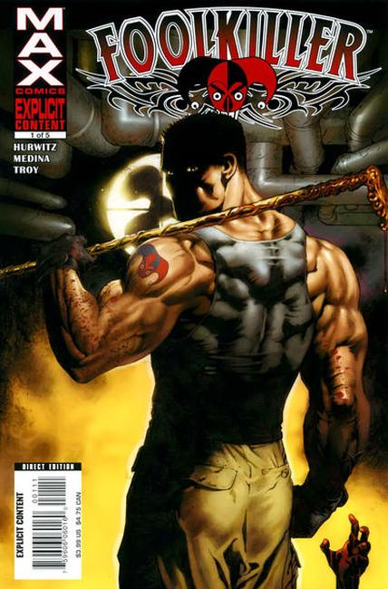

1990:
Story by Steve Gerber
Art by JJ Birch and Tony DeZuniga
"Live a poem, or die a fool!" Here comes the madcap avenger now in his own title. Months have passed since the demise of the Defenders and Greg Salinger, the man formerly known as the Fool Killer, awakes to find himself in a mental institution. Meanwhile, a young man who was a victim of a senseless crime begins to see the world in a whole new light.

2007:
Written by GREGG HURWITZ
Illustration by LAN MEDINA
Los Angeles Times best-selling author Gregg Hurwitz (The Crime Writer) and Lan Medina (Punisher) bring you a gritty, no-holds barred crime thriller! Move over Frank Castle, there's a new vigilante in town. When the Foolkiller strikes, the punishment fits the crime. It's a grand display for all to see, the truth in all its brutal glory, our hidden secrets gutted and turned inside out for the front pages. A vigilante artist, a madman performer, the Foolkiller has been brutally introduced to the human joke, and he wants to make sure fools everywhere take note. What he reveals may not be what you want to see. Or what you want to admit. But he makes one thing certain: If you're a fool, you cannot hide.
2017:
Written by Max Bemis
Art by Dalibor Talajic
Cover by Dave Johnson
Greg Salinger was just your typical merc for hire - FOOLKILLER - killing those that he deemed to be 'foolish.' And for money. But that life is behind him now. Today, he's a psychiatrist, trying to help others. But now S.H.I.E.L.D. wants him to try to rehabilitate super villains. The catch? If these 'patients' don't make enough progress, they're dead!